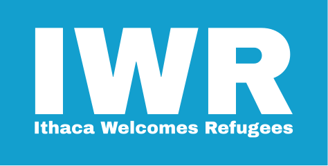

|

X |
In the Spring of 2017, Cornell University Sustainable Design (CUSD) partnered with Ithaca Welcomes Refugees (IWR), a communit organziation that fosters a welcoming environment for refugees who come to the region. Together, we created this website to provide historical and factural information about refugees in Ithaca and to provide some context to the current refugee crisis
Click here to view our sources for infomation collected in this website. |